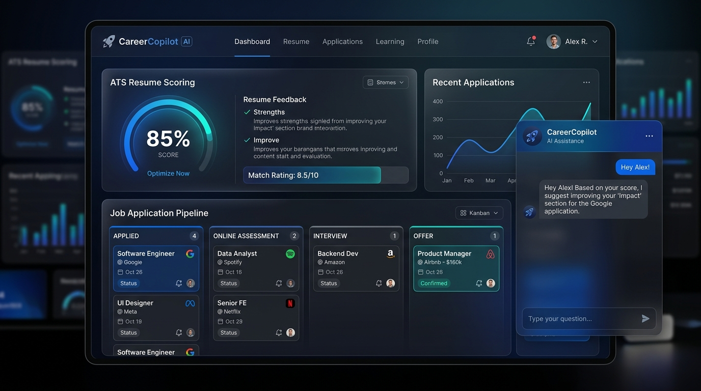
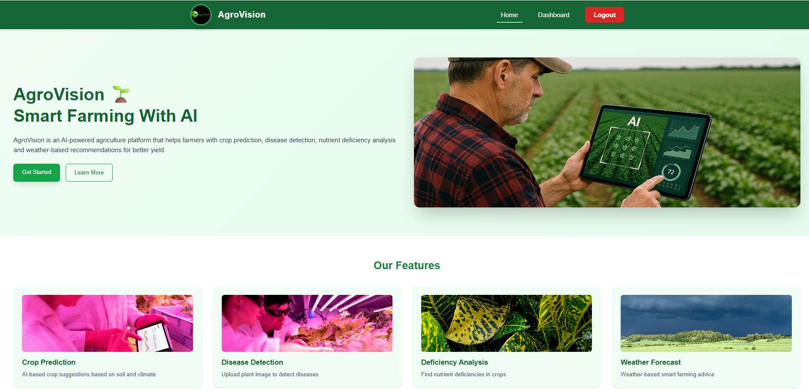
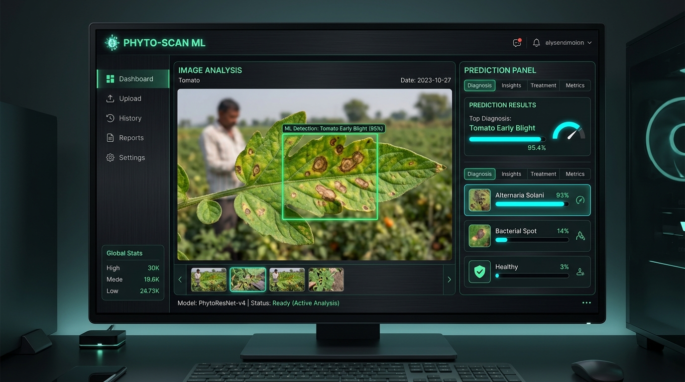
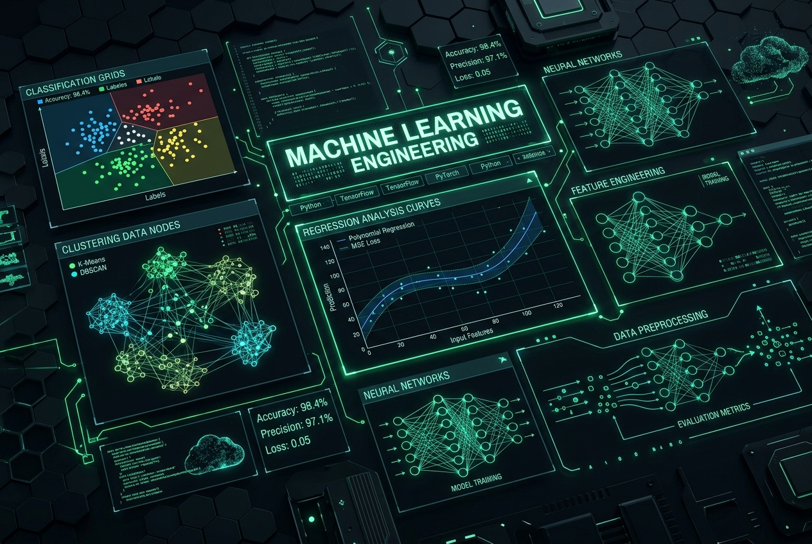
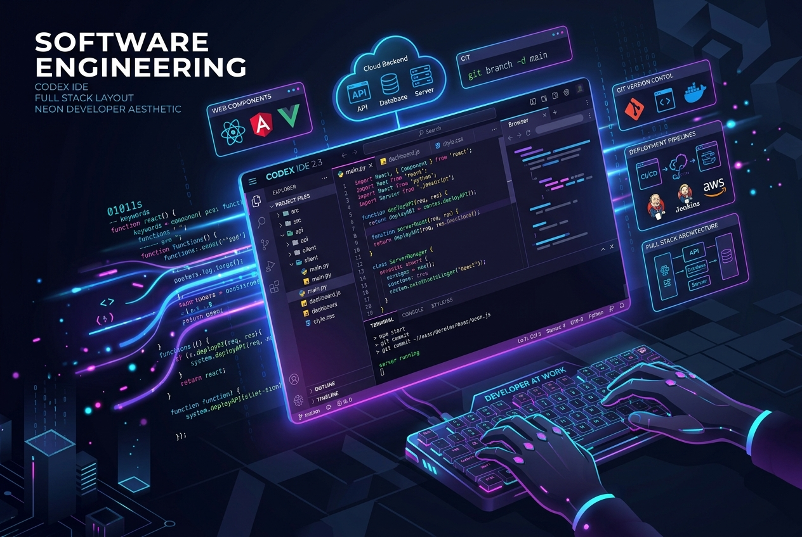

Chandrashekhar Patil
Final Year B.Tech Engineering Student at SGGS, Nanded. Specializing in engineering Large Language Models (LLMs), Agentic Workflows (LangGraph/LangChain), RAG Architectures, and Scalable Software Systems. Heavily grounded in Data Structures & Algorithms (450+ LeetCode, 100+ GFG), backend frameworks (FastAPI/Node.js), and database scaling. Passionate about translating complex computational challenges into high-performance production pipelines. Available immediately for full-time Software, AI/ML, and Data Engineering roles.

About Me
I am a final-year B.Tech Engineering student at Shri Guru Gobind Singhji Institute of Engineering & Technology (SGGS), Nanded. My technical core is built at the intersection of Scalable Software Engineering, AI-Driven Workflows, and Data Pipeline Architecture.
I focus on designing systems where logical algorithms meet neural intelligence. Whether it is engineering contextual search engines using RAG (Retrieval-Augmented Generation), orchestrating multi-agent state machines in LangGraph, optimizing relational databases, or building production-ready RESTful APIs, I thrive on writing clean, modular, and complexity-efficient code.
My experience as a Workshop & Internship Executive in the Training & Placement Cell and Mathematics Teacher at Sankalp Classes has sharpened my capability to translate complex technical problems into structured steps, manage cross-functional workloads, and communicate logic clearly to technical and non-technical stakeholders.
DSA Champion
550+ combined LeetCode and GFG challenges solved with optimized space-time complexities.
Systems Architect
Engineered full-stack LLM products, RAG indexers, and modular ETL pipelines.
Projects
CareerCopilot AI
An end-to-end AI-powered SaaS career acceleration assistant platform designed to optimize resumes, track job applications, generate highly aligned cold outreach resources, and conduct interactive interview preparations for candidates.
Problem
Candidates face friction tracking workflows, understanding ATS scoring filters, generating custom applications, and prepping for interviews.
Solution
Constructed an intelligent analytical engine tracking applications, running NLP-based keyword extraction, and supplying interactive GenAI prep tools.
Tech Stack & Architecture


AgroVision – Smart Agriculture
A MERN-based smart farming portal coordinating farmer accounts, custom soil logging profiles, and crop management strategies to support sustainable agricultural growth.

Plant Disease Detection
A deep learning-based image classification application that utilizes Convolutional Neural Networks (CNNs) to detect leaf blights and crop disease symptoms from uploaded plant photos, delivering instant predictions and mitigation recommendations.
Prescripto – Hospital Management
Full-stack hospital appointment coordinator system providing patients booking queues, doctor profiles management, secure authentication (JWT), and a consolidated dashboard for clinical administration.

Movie Recommender System
Content-based movie recommendation system that extracts feature embeddings and vector similarity calculations using Scikit-Learn to suggest highly correlated films via a Streamlit user interface.

SQL Server Data Warehouse
Implemented a modern analytical data warehouse using SQL Server, setting up Bronze, Silver, and Gold structures to transition raw database tables into structured, analytical schemas optimized for KPI reporting.

Power BI Mobile Sales Dashboard
Interactive, mobile-responsive corporate sales monitoring dashboard featuring dynamic DAX queries, KPI indicators, historical charts, and segmented filters to outline profit optimization.

Exploratory Data Analysis (SQL)
Advanced SQL operations compiling analytical trends using window functions, complex joins, subqueries, and table expressions (CTEs) to clean and profile tabular records.
Skills & Expertise
AI Engineering & GenAI

Machine Learning & Deep Learning

Full-Stack Software Engineering
Data Science & Analytics
Data Engineering & Databases
Experience & Leadership
Mathematics Teacher (5th to 10th Standard)
Sankalp Coaching Classes, Nanded
Delivered comprehensive mathematics lectures, building quantitative foundations and logical reasoning in secondary-level students.
- Instructed algebra, coordinate geometry, and numerical reasoning classes.
- Mentored 150+ students in breaking down word problems into logical, sequential algorithmic steps.
- Conducted periodic analytical assessments, improving classroom scores and average margins by 25%.
Workshop & Internship Executive
Training & Placement Cell, SGGS Nanded
Elected executive responsible for managing technical workshops, preparing placement resources, and tracking training analytics.
- Formulated execution plans for professional programming bootcamps and algorithmic prep bootcamps.
- Guided peers in structuring technical resumes, mapping candidate competencies to company descriptions.
- Engineered scheduling databases to track peer mock-interview performances and coordination pipelines.
Education
B.Tech - Engineering Student (Final Year)
Shri Guru Gobind Singhji Institute of Engineering & Technology (SGGS), Nanded
Focusing on advanced computation coursework: Data Structures, Analysis of Algorithms, Machine Learning Systems, Database Staging, and Analytical Pipelines.
Higher Secondary Certificate (11th & 12th Grade)
Yeshwant Mahavidyalaya, Nanded
Specialized study in Physics, Chemistry, and Mathematics (PCM). Developed a strong mathematical foundation and quantitative analytical abilities.
Secondary School Certificate (SSC)
Shri Chhatrapati Shahu Maharaj Sainiki Vidyalaya, Udgir
Rigorous secondary school education centered on academic sciences, mathematical reasoning, leadership training, and disciplined routines.
Coding Profiles
LeetCode
DSA challenges solved covering Dynamic Programming, Graph Theory, Complex Trees, and greedy algorithms. Focused on O(N) runtime and O(1) space optimization.
View LeetCodeGeeksforGeeks
Analytical challenges and mathematical structures solved to reinforce object-oriented scaling, algorithmic paradigms, and code efficiency standards.
GitHub
Repository host to production-ready AI products (CareerCopilot AI), agricultural classification pipelines, automated staging data warehouses, and backend microservices.
View RepositoriesAchievements
Competitive DSA Coding
Solved 550+ combined Data Structures & Algorithms challenges on LeetCode & GeeksforGeeks, maintaining optimized space-time complexities.
Academic Scholarship Merit
Awarded academic scholarships for exceptional scholastic performance and engineering grade indices at SGGS Nanded.
Leadership & Coordination
Elected Workshop & Internship Executive in the Training & Placement Cell; orchestrated coding bootcamps for 100+ peers.
Professional Mentoring
Elected as a mathematics class teacher at Sankalp Coaching Classes, building logical formulation capabilities in students.
Academic & Teaching Videos

Mathematics Teaching Session
A look at a live math session conducted at Sankalp Classes. Demonstrates clear explanation of complex algorithms and group lecturing skills.

Student Technical Workshop
Guiding peers on system deployments and core databases setups during a collaboration event with the RNXG team.

Professional Interactions

Meeting IPS Shri Krishna Kokate Sir at Nanded SP Office to gather leadership insights.

Dialogue on administration dynamics with IAS Abhijit Raut Sir at Nanded Collector Office.

Collaborative meeting with faculty educators at Sankalp Coaching Classes.

Fostering discipline and quantitative reasoning during a mathematics lecture.
Certificates & Licenses

Python Certification – IIT Delhi
Validated training covering pythonic data structures, algorithm design, and file-parsing routines from IIT Delhi.

Personality Development Program
Completed intensive training workshops focusing on communicative confidence, teamwork models, and corporate etiquettes.

Teaching Experience Certificate
Formally recognized for serving as a math tutor, training logical reasoning and clarity in students.
Contact
Let's Collaborate
I am currently open to placements and internships in Software Engineering (SDE), Machine Learning, and Data Engineering. Feel free to contact me directly or write a message.
Phone
+91 6302494449